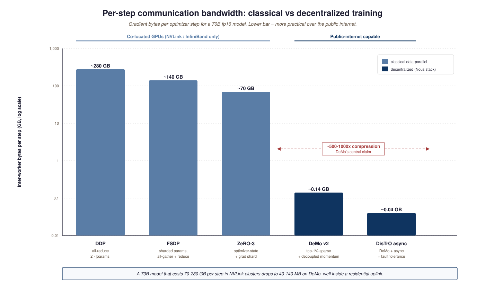
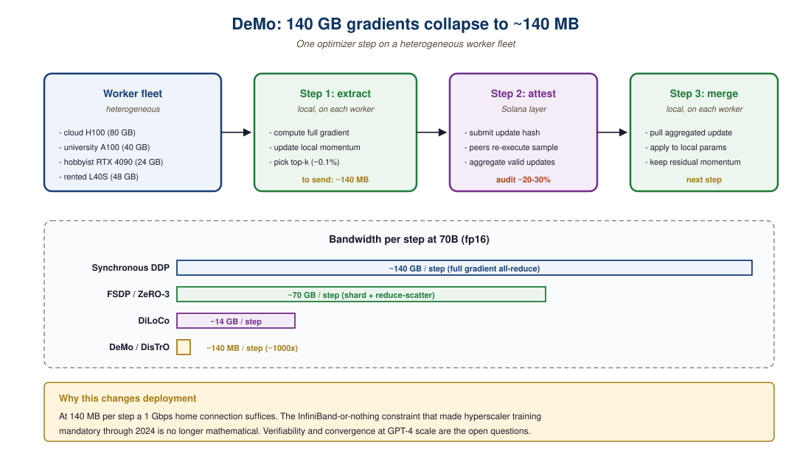

"The bandwidth wall is real, but it is also negotiable if you are willing to send less data."
Bowen Peng et al., DeMo: Decoupled Momentum, 2024
- Explain why synchronous data-parallel training requires hyperscaler-class interconnect, and what specifically DeMo compresses to break that requirement.
- Walk through one DeMo optimizer step end-to-end (local momentum, top-k sparsification, async sync, global merge).
- Compare the bandwidth profiles of DDP, FSDP, DiLoCo, and DeMo on a single common workload.
- Assess the cryptographic-attestation threat model for Nous Psyche and identify which adversaries it does and does not defend against.
For ten years, "frontier model training" implied a co-located GPU datacenter. DeMo and DisTrO attack the underlying bandwidth math directly. If decentralized training crosses the GPT-4 quality threshold by 2027, the economics of who can train frontier models changes from "five hyperscalers" to "anyone willing to coordinate hundreds of consumer-grade GPUs". This section walks the algorithm, the framework, and the live network.
Prerequisites
This section assumes familiarity with frontier accelerators from Section 58.1 and with cross-hardware benchmarking from Section 57.4. Familiarity with pretraining at scale from Section 6.1 helps when reading the gradient-compression math.
Frontier-model training has historically required co-located GPUs with InfiniBand or NVLink fabrics, because synchronous data-parallel training pushes gradients across the network at every step. The bandwidth cost is enormous: a 70B model in fp16 emits 140 GB of gradients per optimizer step, and any inter-node bandwidth below tens of GB/s caps training throughput. That mathematical reality, more than anything else, is why "you can only train a frontier model in a hyperscaler datacenter" was conventional wisdom through 2024.
The decentralized-training thread of 2025-26 attacks exactly that bandwidth cost. DeMo (Decoupled Momentum Optimization) and the DisTrO toolkit it grew out of demonstrated that gradient communication could be compressed by 1000 to 10,000x with measurable but small quality cost; Nous Research Psyche wrapped that algorithm in a coordination layer on Solana and started training models over the public internet. Whether this scales to GPT-4-class checkpoints is one of the open questions of 2027.

58.2.1 DeMo: the algorithmic core
The DeMo paper (Peng, Kingma et al., 2024) introduces an optimizer that decouples the fast-moving "momentum" of standard SGD from the part that must be synchronized across workers. By keeping a local momentum buffer at each worker and only synchronizing a sparse, top-k subset of gradient components per step, DeMo cuts inter-worker bandwidth by roughly three orders of magnitude. The October 2025 v2 of the paper closed the quality gap further and added formal convergence guarantees. The reference implementation lives in the DisTrO repository.
58.2.2 DisTrO: the practical toolkit
DisTrO (Distributed Training Over) is the open-source framework that operationalizes DeMo. It handles fault tolerance, asynchronous synchronization, dynamic worker join/leave, and the gradient-compression bookkeeping needed for DeMo to work at scale. As of mid-2026 it has been used to train models up to ~10B parameters across heterogeneous hardware fleets spanning consumer GPUs and rented cloud H100s.
58.2.3 Nous Psyche: training over the internet
Nous Psyche Network (launched January 2025) is the most ambitious public demonstration of this stack. Built on Solana for coordination, Psyche allows anyone with a GPU to contribute to a public training run, with cryptographic attestation of work and on-chain checkpoint commits. The first Psyche runs trained 1B-class models across hundreds of heterogeneous participants; the network is now moving on to larger checkpoints. Chakra Research's overview is the best entry point for the architecture.
58.2.4 Comparing the decentralized-training stack
| Component | Layer | Role | Status |
|---|---|---|---|
| DeMo v2 | Algorithm | Sparse gradient compression | Published, reference impl |
| DisTrO | Framework | Async coordination + fault tolerance | Open-source, used in production |
| Nous Psyche | Network | Solana coordination, public participation | Live since Jan 2025 |
| Hivemind | Framework | Predecessor decentralized library | Older, less optimized |
| Bittensor | Network | Incentive-based ML market | Active, broader than just training |

Think of a 70B model's gradient as a 140 GB high-dimensional vector and DeMo's top-1% extraction as embedding that vector's signal into a 140 MB shadow. The bulk of the bytes are noise (or near-zero entries that decay fast); the signal lives in the largest-magnitude components, almost the way a steganographic encoder hides a message in the high-frequency components of an image. Local momentum at each worker keeps the discarded-but-not-zero pieces alive, so over many steps the system still "sees" their contribution. The bounded-information claim holds empirically for transformers up to mid-scale; trillion-parameter behavior is still open. Until a fully decentralized run crosses the GPT-4 quality threshold, this remains the question that gates the whole thread.
The first end-to-end public Psyche run trained a 1B-parameter model across roughly 300 heterogeneous participants from January through April 2025. Participating hardware ranged from a cloud-rented H100 cluster (one institutional contributor) to consumer RTX 4090s in apartments. The run committed checkpoints every 1000 steps to Solana; total contributed compute reached approximately 1.2e21 FLOPs (about an H100-month). The resulting model trailed centrally-trained 1B baselines by roughly 1.5 perplexity points on FineWeb-Edu, the closest controlled comparison the field has. The takeaway was twofold: decentralized training works at 1B scale; the quality gap is real but small, and the bandwidth gap is no longer the binding constraint. The 7B Psyche run that started in Q4 2025 is the next data point. Folding@home remains the closest cultural analogue.
The 1B Psyche run showed feasibility; it did not show parity with GPT-4-class capabilities. Two compounding gaps: (1) at trillion-parameter scale, the fraction of gradient mass living in top-k sparse components has not been empirically validated, and (2) post-training (RLHF, DPO, GRPO) is gradient-noise-sensitive in ways pretraining is not, so the same compression ratio may not transfer. Cryptographic attestation is the other gap: Psyche's current proof-of-work is robust against accidental errors but not against coordinated adversaries. The 2026 papers on cryptographic SNARKs for transformer inference are the natural next building block; until they integrate, treat the security model as "trust most participants, audit periodically".
DeMo's "decoupled momentum" idea has a precedent in Lin et al.'s 2017 Deep Gradient Compression, which proposed identical top-k sparsification with momentum correction for mobile training, eight years before frontier LLMs needed it. The 2025 contribution was scale and engineering rigor; the algorithmic kernel is older than most of the engineers using it.
58.2.5 What 2027 has to settle
The hard open question is whether a fully decentralized run can produce a checkpoint competitive with a centralized hyperscaler run. DeMo v2 closes the bandwidth gap; what is left is whether the quality penalty from sparsification and async noise stays small at GPT-4+ scale. The DeepSeek and Qwen open-weight models gave the field a clear quality benchmark; Psyche v2 (announced for late 2026) is the test case. Section 58.3 turns to the opposite end of the deployment spectrum: what runs on the device in your pocket.
Three frontier questions remain: (1) does top-1% gradient sparsification preserve quality at 100B+ parameters, where the loss landscape has different curvature; (2) can RLHF and GRPO post-training tolerate the same compression ratio (early signals suggest no); (3) can cryptographic attestation become non-interactive so adversarial gradient injection is provably bounded? DeMo v2, the DiLoCo line, and the Psyche v2 release are the next data points.
- Synchronous data-parallel training requires 70-280 GB of gradient bandwidth per step at frontier scale; that is the hyperscaler-fabric requirement.
- DeMo's top-k sparsification compresses that 500-1000x to roughly 140 MB per step, fitting inside residential uplinks.
- Nous Psyche's first 1B run trailed centrally-trained baselines by ~1.5 perplexity points, demonstrating viability but not yet parity.
- The remaining open questions are quality at trillion-parameter scale, post-training (RLHF/GRPO) compression tolerance, and adversarially-robust cryptographic attestation.
Show Answer
Show Answer
Further Reading
Decentralized training pushes the frontier to commodity hardware; the next section pushes it onto the device in your pocket. Continue to Section 58.3: Edge LLMs: MLX, Apple Intelligence, Llama-Mobile.